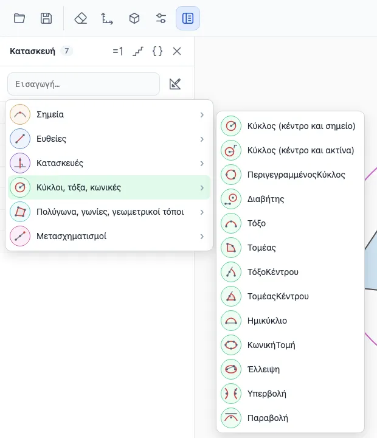

Το μενού εργαλείων

Χρήση
- Το , δεξιά από τη γραμμή εισαγωγής, ανοίγει το μενού: οι οικογένειες του δακτυλίου, με τα ίδια χρώματα και την ίδια σειρά, και έπειτα τα εργαλεία τους όταν περνά ο δείκτης από πάνω ή με άγγιγμα.
- Το μενού περιέχει όλα τα εργαλεία του δακτυλίου και επιπλέον άλλα (σήμα δακτύλιος παρακάτω). Οι οικογένειες Επίπεδα και Στερεά και τα εργαλεία με σήμα 3D εμφανίζονται μόνο στην προβολή 3D.
- Το πρώτο επιλεγμένο αντικείμενο παίρνει οποιαδήποτε θέση δέχεται ο τύπος του: για μια κάθετη, η ευθεία μπορεί να έρθει πριν από το σημείο.
- Το εργαλείο είναι μόνιμο: μετά από κάθε αντικείμενο, περιμένει ξανά το πρώτο του όρισμα. Το κουμπί του μενού παίρνει το εικονίδιό του και η γραμμή δείχνει μια λωρίδα με το Τέλος.
- Έξοδος: Τέλος, Esc, το ✕ της υπόδειξης, το κουμπί του μενού (που ξανανοίγει το μενού), η γόμα, το βήμα προς βήμα ή ένα κλικ σε μια γραμμή κειμένου. Η αναίρεση, η ακύρωση αναίρεσης, οι ιδιότητες και η προβολή 3D κρατούν το εργαλείο.
Με επιλογή
Με αντικείμενα επιλεγμένα πρώτα (Ctrl-κλικ,
Shift-κλικ ή παρατεταμένο πάτημα), το μενού
απενεργοποιεί τα εργαλεία που δεν τα δέχονται. Κάθε αντικείμενο
παίρνει, με τη σειρά, την πρώτη ελεύθερη θέση του τύπου του· η
γραμμή κατασκευάζεται αμέσως αν είναι πλήρης. Παράδειγμα: A, B,
C και μετά ΠεριγεγραμμένοςΚύκλος γράφει
ΠεριγεγραμμένοςΚύκλος(A, B, C).
Όλα τα εργαλεία
Για κάθε εργαλείο: τι επιλέγετε, και έπειτα η γραμμή που γράφεται.
Σημεία
-
ΣημείοδακτύλιοςΤο σημείο που αγγίζετε: ελεύθερο σε κενό σημείο, πάνω σε αντικείμενο ή στην τομή δύο αντικειμένων.
Σημείο(c, t) -
ΤομήδακτύλιοςΜια διασταύρωση με ένα μόνο άγγιγμα, ή τα δύο αντικείμενα το ένα μετά το άλλο.
Τομή(a, b) -
ΜέσοδακτύλιοςΔύο σημεία, ή ένα τμήμα.
Μέσο(A, B) -
ΚέντροδακτύλιοςΈνας κύκλος: το κέντρο του.
Κέντρο(c) -
ΆλληΤομήΔύο αντικείμενα, έπειτα ένα σημείο ήδη τοποθετημένο σε μία από τις τομές τους: το σημείο τομής που απέχει περισσότερο από αυτό.
ΆλληΤομή(a, b, P) -
ΈγκεντροΤρία σημεία, κορυφές τριγώνου: το κέντρο του εγγεγραμμένου κύκλου του.
Έγκεντρο(A, B, C) -
ΒαρύκεντροΤρία σημεία: το βαρύκεντρο του τριγώνου.
Βαρύκεντρο(A, B, C) -
ΠερίκεντροΤρία σημεία: το κέντρο του περιγεγραμμένου κύκλου.
Περίκεντρο(A, B, C) -
ΟρθόκεντροΤρία σημεία: το ορθόκεντρο του τριγώνου.
Ορθόκεντρο(A, B, C)
Ευθείες
-
ΤμήμαδακτύλιοςΔύο σημεία, τα άκρα του.
Τμήμα(A, B) -
ΕυθείαδακτύλιοςΔύο σημεία της ευθείας.
Ευθεία(A, B) -
ΗμιευθείαδακτύλιοςΔύο σημεία: η αρχή, έπειτα ένα σημείο της ημιευθείας.
Ημιευθεία(A, B) -
ΔιάνυσμαδακτύλιοςΔύο σημεία: η αρχή, έπειτα το πέρας.
Διάνυσμα(A, B)
Κατασκευές
-
ΚάθετηδακτύλιοςΈνα σημείο και μια ευθεία, με όποια σειρά θέλετε. Σε 3D, μια ευθεία ή ένα επίπεδο.
Κάθετη(P, d) -
ΠαράλληληδακτύλιοςΈνα σημείο και μια ευθεία, με όποια σειρά θέλετε.
Παράλληλη(P, d) -
ΜεσοκάθετηδακτύλιοςΔύο σημεία, ή ένα τμήμα.
Μεσοκάθετη(A, B) -
ΔιχοτόμοςδακτύλιοςΤρία σημεία: ένα σημείο της πρώτης πλευράς, η κορυφή, ένα σημείο της δεύτερης πλευράς.
Διχοτόμος(A, O, B) -
ΕφαπτομένηΈνα σημείο, έπειτα ένας κύκλος, μια κωνική ή η γραφική παράσταση συνάρτησης. Το εργαλείο δίνει την εφαπτομένη αρ. 1· αλλάξτε τον αριθμό σε 2 στη γραμμή της για την άλλη.
Εφαπτομένη(P, c, 1)
Κύκλοι, τόξα, κωνικές
-
Κύκλος (κέντρο και σημείο)δακτύλιοςΤο κέντρο, έπειτα ένα σημείο του κύκλου.
Κύκλος(O, A) -
Κύκλος (κέντρο και ακτίνα)δακτύλιοςΜόνο το κέντρο: η ακτίνα, περίπου 150 pixel, αλλάζει έπειτα σύροντας τον κύκλο ή στη γραμμή του.
Κύκλος(O, 3.8) -
ΠεριγεγραμμένοςΚύκλοςδακτύλιοςΤρία σημεία του κύκλου.
ΠεριγεγραμμένοςΚύκλος(A, B, C) -
Σφαίραδακτύλιος3DΤο κέντρο, έπειτα ένα σημείο της σφαίρας.
Σφαίρα(O, A) -
ΔιαβήτηςΔύο σημεία που δίνουν την ακτίνα, έπειτα το κέντρο.
Διαβήτης(A, B, O) -
Κύκλος (κέντρο, διεύθυνση και ακτίνα)3DΤο κέντρο, έπειτα μια ευθεία (ο άξονας) ή ένα επίπεδο (παράλληλο προς τον κύκλο), συμπεριλαμβανομένου του δαπέδου. Ακτίνα περίπου 150 pixel.
Κύκλος(O, 3.8, d) -
Κύκλος (άξονας και σημείο)3DΜια ευθεία, ο άξονας, έπειτα ένα σημείο του κύκλου.
Κύκλος(d, P) -
ΤόξοΤρία σημεία: η αρχή, ένα σημείο από το οποίο περνά, το τέλος.
Τόξο(A, B, C) -
ΤομέαςΤρία σημεία, όπως για το τόξο: ο τομέας που ορίζει.
Τομέας(A, B, C) -
ΤόξοΚέντρουΤο κέντρο, η αρχή, έπειτα ένα σημείο της ημιευθείας όπου σταματά το τόξο (θετική φορά).
ΤόξοΚέντρου(M, A, B) -
ΤομέαςΚέντρουΌπως το
ΤόξοΚέντρου: ο τομέας.ΤομέαςΚέντρου(M, A, B) -
ΗμικύκλιοΔύο σημεία, άκρα της διαμέτρου: το ημικύκλιο αριστερά από το [AB].
Ημικύκλιο(A, B) -
ΚωνικήΤομήΠέντε σημεία της κωνικής. Από το δεύτερο και μετά, η προεπισκόπηση δείχνει την κωνική που πλησιάζει περισσότερο έναν κύκλο.
ΚωνικήΤομή(A, B, C, D, E) -
ΈλλειψηΟι δύο εστίες, έπειτα ένα σημείο της έλλειψης.
Έλλειψη(F, G, P) -
ΥπερβολήΟι δύο εστίες, έπειτα ένα σημείο της υπερβολής.
Υπερβολή(F, G, P) -
ΠαραβολήΗ εστία, έπειτα η διευθετούσα.
Παραβολή(F, d)
Πολύγωνα, γωνίες, γεωμετρικοί τόποι
-
ΠολύγωνοδακτύλιοςΟι κορυφές μία μία, έπειτα ξανά η πρώτη για να κλείσει.
Πολύγωνο(A, B, C) -
ΓωνίαδακτύλιοςΤρία σημεία: ένα σημείο της πρώτης πλευράς, η κορυφή, ένα σημείο της δεύτερης πλευράς.
Γωνία(A, O, B) -
ΓεωμετρικόςΤόποςδακτύλιοςΈνα σημείο που εξαρτάται από σημείο πάνω σε αντικείμενο: ο γεωμετρικός του τόπος όταν αυτό το σημείο διατρέχει το αντικείμενό του.
ΓεωμετρικόςΤόπος(M, P) -
ΚανονικόΠολύγωνοΔύο διαδοχικές κορυφές: το εργαλείο δίνει τετράγωνο· αλλάξτε τον αριθμό των πλευρών στη γραμμή του.
ΚανονικόΠολύγωνο(A, B, 4)
Μετασχηματισμοί
-
Κεντρική συμμετρίαδακτύλιοςΤο σημείο που μετασχηματίζεται, έπειτα το κέντρο.
Συμμετρία(P, O) -
Αξονική συμμετρίαδακτύλιοςΤο σημείο που μετασχηματίζεται και ο άξονας, με όποια σειρά θέλετε.
Συμμετρία(P, d) -
ΣτροφήΤο σημείο, έπειτα το κέντρο: ένα τέταρτο της στροφής, που αλλάζει στη γραμμή της.
Στροφή(P, O, 90) -
ΜεταφοράΤο σημείο, έπειτα το διάνυσμα.
Μεταφορά(P, u) -
ΟμοιοθεσίαΤο σημείο, έπειτα το κέντρο: λόγος 2, που αλλάζει στη γραμμή της.
Ομοιοθεσία(P, O, 2) -
ΑντιστροφήΤο σημείο, έπειτα ο κύκλος αντιστροφής.
Αντιστροφή(P, c)
Επίπεδα
-
Επίπεδο3DΤρία σημεία, ή ένα σημείο και μια ευθεία.
Επίπεδο(A, B, C) -
ΠαράλληλοΕπίπεδο3DΈνα σημείο και ένα επίπεδο (συμπεριλαμβανομένου του δαπέδου): το παράλληλο επίπεδο που διέρχεται από το σημείο.
ΠαράλληλοΕπίπεδο(A, p) -
ΚάθετοΕπίπεδο3DΈνα σημείο και μια ευθεία: το επίπεδο κάθετο στην ευθεία.
ΚάθετοΕπίπεδο(A, d)
Στερεά
-
Κύλινδρος3DΔύο σημεία, άκρα του άξονα. Ακτίνα περίπου 150 pixel.
Κύλινδρος(A, B, 3.8) -
Κώνος3DΤο κέντρο της βάσης, έπειτα η κορυφή. Ακτίνα περίπου 150 pixel.
Κώνος(A, B, 3.8) -
Κύβος3DΔύο σημεία του ίδιου επιπέδου ή του ίδιου ύψους, αλλιώς τρία σημεία (βλ. 3D).
Κύβος(A, B, C) -
Πρίσμα3DΈνα πολύγωνο, η βάση, έπειτα ένα σημείο, κορυφή της απέναντι έδρας.
Πρίσμα(p, P) -
Πυραμίδα3DΈνα πολύγωνο, η βάση, έπειτα η κορυφή.
Πυραμίδα(p, S) -
Διατομή3DΈνα στερεό (σφαίρα, κύλινδρος, κώνος, πολύεδρο) και ένα επίπεδο, με όποια σειρά θέλετε.
Διατομή(s, p) -
Ανάπτυγμα3DΈνας κύβος, ένα πρίσμα ή μια πυραμίδα: το επίπεδο ανάπτυγμά του.
Ανάπτυγμα(c, 1)
Οι μετασχηματισμοί κατασκευάζουν την εικόνα ενός
σημείου. Μόνο από το πληκτρολόγιο:
ΣταθερόΣημείο, Κορυφή,
Δρομέας, Λίστα, οι τομές στον χώρο,
Έλλειψη(F, G, a) και
Υπερβολή(F, G, a) (βλ.
Οι εντολές).